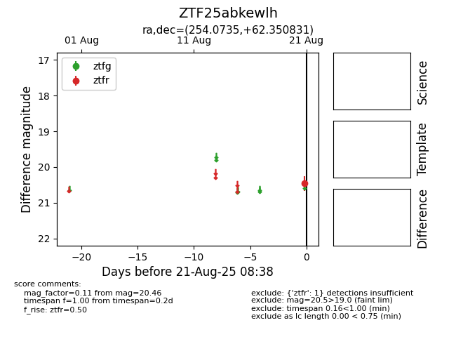

Target ZTF25abkewlh at 2025-08-21 08:38, see:
FINK: fink-portal.org/ZTF25abkewlh
Lasair: lasair-ztf.lsst.ac.uk/objects/ZTF25abkewlh
ALeRCE: alerce.online/object/ZTF25abkewlh
alt names
ZTF25abkewlh (ztf,alerce)
coordinates:
equatorial (ra, dec) = (254.0735,+62.35083)
galactic (l, b) = (92.2863,+37.07006)
photometry
last ztfr=20.46
1 ztfr detections
